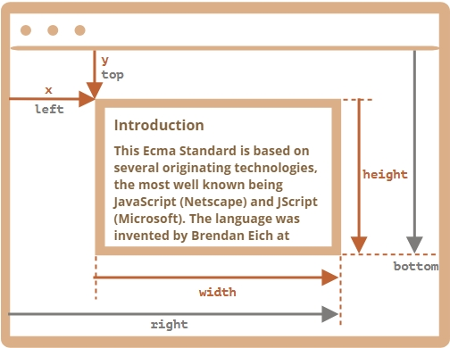

Системы координат относительно:
То есть понятно, что pageY это координата относительно начала документа, а
clientY это координата относительное верха окна браузера.
Метод elem.getBoundingClientRect() возвращает координаты в контексте окна для минимального по размеру прямоугольника, который заключает в себе элемент elem, в виде объекта встроенного класса DOMRect. Основные свойства этого объекта:
Вот картинка с результатами вызова elem.getBoundingClientRect():

Заметим:
Вызов document.elementFromPoint(x, y) возвращает самый глубоко вложенный элемент в окне, находящийся по координатам (x, y).
let elem = document.elementFromPoint(x, y);
Например, код ниже выделяет с помощью стилей и выводит имя тега элемента, который сейчас в центре окна браузера:
let centerX = document.documentElement.clientWidth / 2;
let centerY = document.documentElement.clientHeight / 2;
let elem = document.elementFromPoint(centerX, centerY);
elem.style.background = "red";
alert(elem.tagName);
Вставлять на выполняемый элемент я этот код не буду, он слегка ебанутый. И выделяет красным элемент который
сейчас в центре экрана.
Для координат за пределами окна метод elementFromPoint возвращает null
Метод document.elementFromPoint(x,y) работает, только если координаты (x,y) относятся к видимой части содержимого окна. Если любая из координат представляет собой отрицательное число или превышает размеры окна, то возвращается null. Вот типичная ошибка, которая может произойти, если в коде нет соответствующей проверки:
let elem = document.elementFromPoint(x, y); // если координаты ведут за пределы окна, то elem = null elem.style.background = ''; // Ошибка!
Чтобы показать что-то около нужного элемента, мы можем вызвать getBoundingClientRect, чтобы получить его координаты, а затем использовать CSS-свойство position вместе с left/top (или right/bottom). Например, функция createMessageUnder(elem, html) ниже показывает сообщение под элементом elem:
let elem = document.getElementById("coords-show-mark");
function createMessageUnder(elem, html) {
// создаём элемент, который будет содержать сообщение
let message = document.createElement('div');
// для стилей лучше было бы использовать css-класс здесь
message.style.cssText = "position:fixed; color: red";
// устанавливаем координаты элементу, не забываем про "px"!
let coords = elem.getBoundingClientRect();
message.style.left = coords.left + "px";
message.style.top = coords.bottom + "px";
message.innerHTML = html;
return message;
}
// Использование:
// добавим сообщение на страницу на 5 секунд
let message = createMessageUnder(elem, 'Hello, world!');
document.body.append(message);
setTimeout(() => message.remove(), 5000);
В примере на сайте надпись появляется после кнопки и висит там вне зависимости от прокрутки. Причина весьма
очевидна: сообщение позиционируется с помощью position:fixed, поэтому оно
остаётся всегда на том же самом месте
в окне при прокрутке страницы.
position:absolute.
В такой системе координат отсчёт ведётся от левого верхнего угла документа, не окна. В CSS координаты относительно окна браузера соответствуют свойству position:fixed, а координаты относительно документа – свойству position:absolute на самом верхнем уровне вложенности.
Не существует стандартного метода, который возвращал бы координаты элемента относительно документа, но мы можем написать его сами.Две системы координат связаны следующими формулами:
// получаем координаты элемента в контексте документа
function getCoords(elem) {
let box = elem.getBoundingClientRect();
return {
top: box.top + window.pageYOffset,
right: box.right + window.pageXOffset,
bottom: box.bottom + window.pageYOffset,
left: box.left + window.pageXOffset
};
}
Если бы в примере выше мы использовали её вместе с position:absolute, то при прокрутке сообщение оставалось бы
рядом с элементом.
Модифицированная функция createMessageUnder:
function createMessageUnder(elem, html) {
let message = document.createElement('div');
message.style.cssText = "position:absolute; color: red";
let coords = getCoords(elem);
message.style.left = coords.left + "px";
message.style.top = coords.bottom + "px";
message.innerHTML = html;
return message;
}
Любая точка на странице имеет координаты:
elem.getBoundingClientRect().elem.getBoundingClientRect() плюс текущая
прокрутка страницы.position:fixed, а
координаты относительно документа – для использования с position:absolute .
Кроме последней 4 точки у меня решено в точности как у него. Последню точку он предлагает вычислять из первой прибавив внутренние координаты объекта насколько я понял. Моё решение:
function task1(params) {
let field = document.querySelector('#field')
let oneCoord = field.getBoundingClientRect()
let div = document.createElement('div')
div.setAttribute('id', 'ansvers')
document.body.append(div);
let oneP = document.createElement('p')
oneP.setAttribute('id', 'onepara');
div.append(oneP)
oneP.innerHTML=(`Coordinats first point is ${oneCoord.left}:${oneCoord.top}`)
let twoP = document.createElement('p')
div.append(twoP)
twoP.setAttribute('id', 'twopara')
twoP.innerHTML = (`Coordinats second point is ${oneCoord.right}:${oneCoord.bottom}`)
let threeP = document.createElement('p')
div.append(threeP)
threeP.setAttribute('id', 'threepara')
threeP.innerHTML = `Coordinats third point is ${oneCoord.left + field.clientLeft}:${oneCoord.top + field.clientTop}`
let fouthP = document.createElement('p')
fouthP.setAttribute('id', 'fouthpara')
div.append(fouthP)
fouthP.innerHTML = `Coordinats fourth point is ${oneCoord.right - field.clientTop}:${oneCoord.bottom - field.clientTop}`
}
Решение такое:
function positionAt(anchor, position, elem) {
let coords = anchor.getBoundingClientRect()
elem.style.position = "absolute"
if(position == "top"){
elem.style.top = coords.y - elem.offsetHeight + 'px'
elem.style.left = coords.x + 'px'
}
if(position == 'right'){
elem.style.top = coords.y + 'px'
elem.style.left = coords.x + anchor.offsetWidth + 'px'
}
if(position == 'bottom'){
elem.style.top = coords.y + anchor.offsetHeight + 'px'
elem.style.left = coords.x + 'px'
}
}
У меня стоит изначально elem.style.position = "absolute" иначе элементы
остаются привязанными к окну.
Решено так
function positionAt(anchor, position, elem) {
let coords = anchor.getBoundingClientRect()
elem.style.position = "absolute"
if (position == "top-out") {
elem.style.top = coords.y - elem.offsetHeight + 'px'
elem.style.left = coords.x + 'px'
}
if (position == 'right-out') {
elem.style.top = coords.y + 'px'
elem.style.left = coords.x + anchor.offsetWidth + 'px'
}
if (position == 'bottom-out') {
elem.style.top = coords.y + anchor.offsetHeight + 'px'
elem.style.left = coords.x + 'px'
}
if (position == "top-in") {
elem.style.top = coords.y + 'px'
elem.style.left = coords.x + 'px'
}
if (position == 'right-in') {
elem.style.top = coords.y + 'px'
elem.style.left = coords.x + anchor.offsetWidth-elem.offsetWidth + 'px'
}
if (position == 'bottom-in') {
elem.style.top = coords.y + anchor.offsetHeight - elem.offsetHeight + 'px'
elem.style.left = coords.x + 'px'
}
}